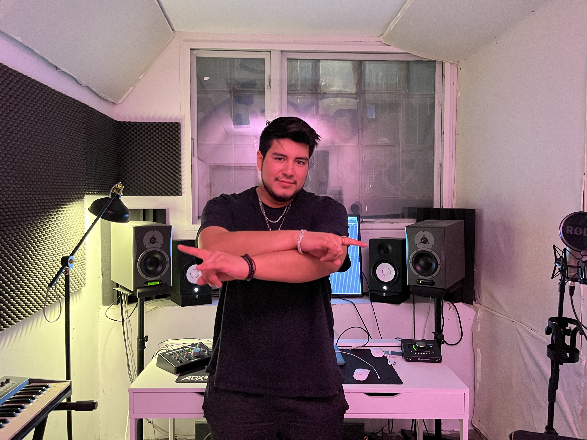

SEBASTIAN WIBE
Sebastian Wibe er en 19 årig DJ & Producer fra København. Sebastian har allerede opnået anerkendelse gennem artister som bla. Tiesto, Martin Garrix, Nicky Romero, Bassjackers og Quintino, der har nikket anerkendende til hans arbejde. Sebastians stil kan best beskrives som melodisk house, med stort fokus på atmosfære og følelse. Med sine Peruvianske rødder er der allerede nu mere end 2.000.000 stream på Youtube og Soundcloud og mere end 19.000 følgere.
DOKUMENTATION
